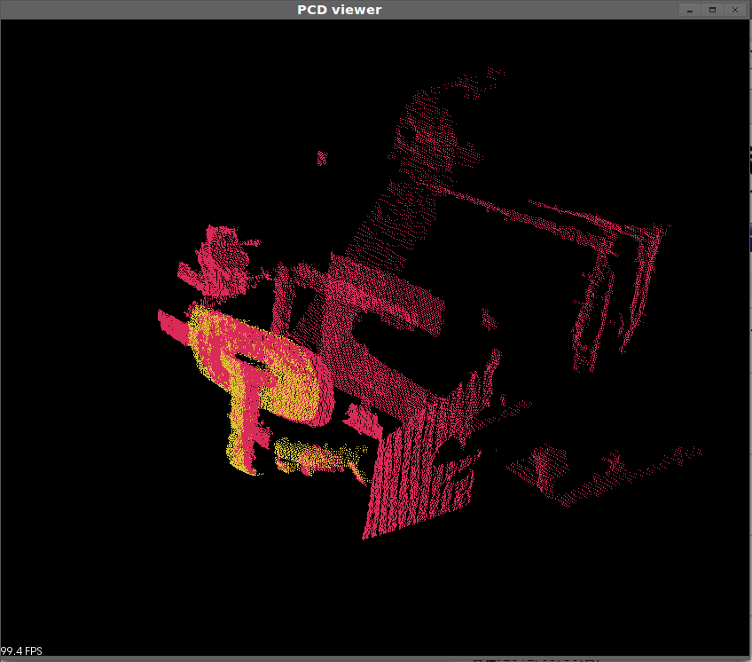
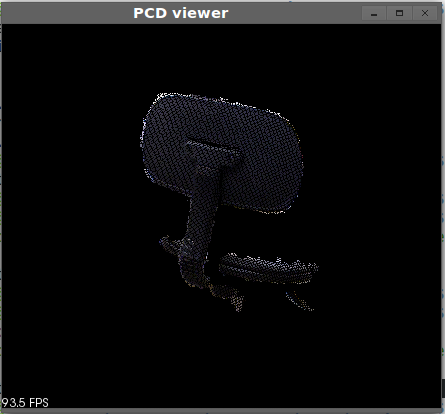
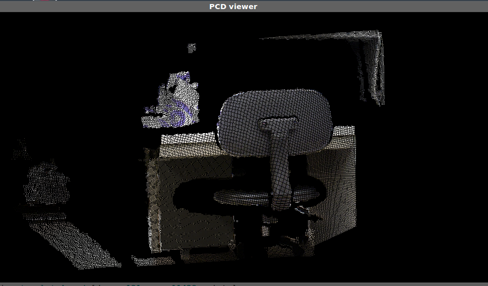
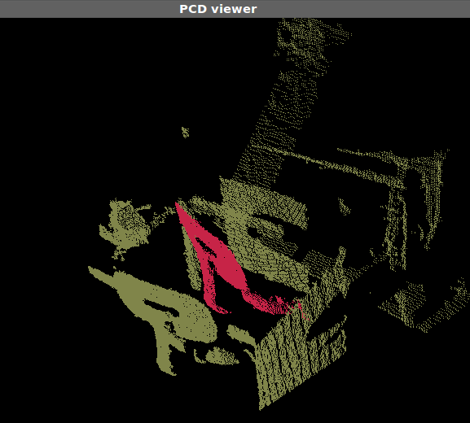

サンプルプログラム4
概要
ICP(Iterative Closest Point)という手法を使って、2つのポイントクラウドを位置合わせするプログラムです。

↑ピンクがターゲットクラウド、黄色が位置合わせされたテンプレートクラウド
※ICPは、
- テンプレートクラウドのそれぞれの点について、ターゲットクラウドの最寄りの1点を対応点とする
- すべての対応点同士の距離が小さくなるようにテンプレートクラウドをターゲットクラウドに向かって移動させる
この2つの動作を繰り返すことで、テンプレートとターゲットの位置を合わせる手法です。
ICPは局所的な最適解に収束する(初期位置が大きく間違っていると間違った場所に収束してしまう)性質を持っています。
詳細については、興味がある人は調べてみましょう。
使いかた
-
まずコンパイルします。
コンパイル方法はサンプルプログラム1と同じです。
-
実行する前に、テンプレートおよびターゲットとなるPCDファイルを見てみましょう。dataディレクトリに移動してpcd_viewerを起動してみてください。
※2014-07-22追記 最近のバージョンでは、pcd_viewerが無いことがあります。その時は代わりにpcl_viewerを使ってください。
pcd_viewer templateA.pcd

↑templateA.pcd。椅子の部分だけを切り取ったものです。
pcd_viewer targetA.pcd

↑targetA.pcd。机の下の椅子をXtionで撮影したものです。
pcd_viewer targetA.pcd templateA.pcd

↑templateA.pcd(ピンク)とtargetA.pcd(黄土色)の比較。初期位置はこれだけ離れています。
-
プログラムを実行し、ICPを行います。処理が終わるとマッチングの結果が端末に出力されます。
./sample4 ../data/templateA.pcd ../data/targetA.pcd
位置合わせされたテンプレートは「output.pcd」として出力されます。
-
pcd_viewer output.pcd targetA.pcd
結果とoutput.pcdを比較してみると、templateA.pcdがtargetA.pcdの対応する部分に移動していることがわかります。(このページの一番上の図)
-
別の種類の椅子のデータtemplateB.pcdおよびtargetB.pcdも用意しているので、よければ試してみてください。
readmeのトップへ戻る